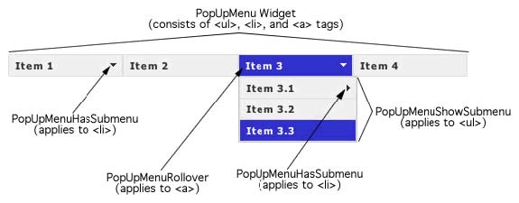

A Menu Bar widget is a set of navigational menu buttons that display submenus when a mouse pointer hovers over one of the buttons. Menu Bars let you display a large amount of navigational information in a compact space, and also give visitors to the site a sense of what is available on the site without having to browse it extensively.
The following example shows a horizontal Menu Bar widget, with the third menu item expanded.

Menu Bar widget (consists of <ul>, <li>, and
<a> tags)
The HTML code for the Menu Bar widget consists of an outer ul tag that contains an li tag for each of the top-level menu items. The top-level menu items (li tags) in turn contain ul and li tags that define submenus for each of the items, and submenus can likewise contain submenus. Top-level menus and submenus can contain an unlimited number of submenu items.
Note: As a best practice, try not to list every page on your site in the various levels of a menu bar. If a user has JavaScript turned off in their browser (and many do), the user can see only the top-level menu items of the menu bar.
The HTML code for the Menu Bar widget also includes script tags in the head of the document and after the Menu Bar's HTML code. These tags create a JavaScript object, which makes the Menu Bar interactive. You define whether the Menu Bar widget will be vertical or horizontal in the main container ul tag for the Menu Bar. Following is the HTML code for a horizontal Menu Bar widget:
<head>
...
<!--Link the Spry Manu Bar JavaScript library-->
<script src="SpryAssets/SpryMenuBar.js" type="text/javascript"></script>
<!--Link the CSS style sheet that styles the menu bar. You can select between horizontal and vertical-->
<link href="SpryAssets/SpryMenuBarHorizontal.css" rel="stylesheet" type="text/css" />
</head>
<body>
<!--Create a Menu bar widget and assign classes to each element-->
<ul id="menubar1" class="MenuBarHorizontal">
<li><a class="MenuBarItemSubmenu" href="#">Item 1</a>
<ul>
<li><a href="#">Item 1.1</a></li>
<li><a href="#">Item 1.2</a></li>
<li><a href="#">Item 1.3</a></li>
</ul>
</li>
<li><a href="#">Item 2</a></li>
<li><a class="MenuBarItemSubmenu" href="#">Item 3</a>
<ul>
<li><a class="MenuBarItemSubmenu" href="#">Item 3.1</a>
<ul>
<li><a href="#">Item 3.1.1</a></li>
<li><a href="#">Item 3.1.2</a></li>
</ul>
</li>
<li><a href="#">Item 3.2</a></li>
<li><a href="#">Item 3.3</a></li>
</ul>
</li>
<li><a href="#">Item 4</a></li>
</ul>
<!--Initialize the Menu Bar widget object-->
<script type="text/javascript">
var menubar1 = new Spry.Widget.MenuBar("menubar1", {imgDown:"SpryAssets/SpryMenuBarDownHover.gif", imgRight:"SpryAssets/SpryMenuBarRightHover.gif"});
</script>
</body>
In the code, the new JavaScript operator initializes the Menu Bar object, and transforms the ul content with the ID of menubar1 from static HTML code into an interactive page element. The Spry.Widget.MenuBar method is a constructor in the Spry framework that creates Menu Bar objects, and the information necessary to initialize the object is contained in the MenuBar.js JavaScript library that you linked to in the head of the document.
Many of the a tags that create the widget contain a CSS class. These classes control the style of the Menu Bar widget, and exist in the accompanying CSS file, SpryMenuBarHorizontal.css or SpryMenuBarVertical.css, depending on your selection.
You can change the appearance of any given part of the Menu Bar widget by editing the CSS rule that corresponds to the class names assigned to it in the HTML code. For example, to change the background color of the Menu Bar's top-level menu items, edit the corresponding CSS rule in the SpryMenuBarHorizontal.css file. Keep in mind that changing the CSS code in the SpryManuBarHorizontal.css file will affect all menu bars that are linked to that file.
In addition to the classes shown in the HTML code, the Menu Bar widget includes certain default behaviors that are attached to the widget. These behaviors are a built‑in part of the Spry framework, and are in the SpryMenuBar.js JavaScript library file. The library file includes behaviors related to hovering.
You can change the look of the Menu Bar as it relates to these behaviors by editing the appropriate classes in one of the CSS files. If for some reason you want to remove a given behavior, you can delete the CSS rules that correspond to that behavior.
The SpryMenuBarHorizontal.css and SpryMenuBarVertical.css files contain the rules that style the Menu Bar widget. You can edit these rules to style the menu bar's look and feel. The names of the rules in the CSS file correspond directly to the names of the classes specified in the Menu Bar widget's HTML code.
Note: You can replace style-related class names in the SpryMenuBarHorizontal.css and SpryMenuBarVertical.css files and HTML code with class names of your own. Doing so does not affect the functionality of the widget, as CSS code is not required for widget functionality.
The default functionality for the behaviors classes at the end of the style sheet are defined in the SpryMenuBar.js JavaScript library file. You can change the default functionality by adding properties and values to the behavior rules in the style sheet.
The following is the CSS code for the SpryMenuBarHorizontal.css file:
/*Menu Bar styling classes*/
ul.MenuBarHorizontal{
margin: 0;
padding: 0;
list-style-type: none;
font-size: 100%;
cursor: default;
width: auto;
}
ul.MenuBarActive{
z-index: 1000;
}
ul.MenuBarHorizontal li{
margin: 0;
padding: 0;
list-style-type: none;
font-size: 100%;
position: relative;
text-align: left;
cursor: pointer;
width: 8em;
float: left;
}
ul.MenuBarHorizontal ul{
margin: 0;
padding: 0;
list-style-type: none;
font-size: 100%;
z-index: 1020;
cursor: default;
width: 8.2em;
position: absolute;
left: -1000em;
}
ul.MenuBarHorizontal ul.MenuBarSubmenuVisible{
left: auto;
}
ul.MenuBarHorizontal ul li{
width: 8.2em;
}
ul.MenuBarHorizontal ul ul{
position: absolute;
margin: -5% 0 0 95%;
}
ul.MenuBarHorizontal ul.MenuBarSubmenuVisible ul.MenuBarSubmenuVisible{
left: auto;
top: 0;
}
ul.MenuBarHorizontal ul{
border: 1px solid #CCC;
}
ul.MenuBarHorizontal a{
display: block;
cursor: pointer;
background-color: #EEE;
padding: 0.5em 0.75em;
color: #333;
text-decoration: none;
}
ul.MenuBarHorizontal a:hover, ul.MenuBarHorizontal a:focus{
background-color: #33C;
color: #FFF;
}
ul.MenuBarHorizontal a.MenuBarItemHover, ul.MenuBarHorizontal a.MenuBarItemSubmenuHover, ul.MenuBarHorizontal a.MenuBarSubmenuVisible{
background-color: #33C;
color: #FFF;
}
ul.MenuBarHorizontal a.MenuBarItemSubmenu{
background-image: url(SpryMenuBarDown.gif);
background-repeat: no-repeat;
background-position: 95% 50%;
}
ul.MenuBarHorizontal ul a.MenuBarItemSubmenu{
background-image: url(SpryMenuBarRight.gif);
background-repeat: no-repeat;
background-position: 95% 50%;
}
ul.MenuBarHorizontal a.MenuBarItemSubmenuHover{
background-image: url(SpryMenuBarDownHover.gif);
background-repeat: no-repeat;
background-position: 95% 50%;
}
ul.MenuBarHorizontal ul a.MenuBarItemSubmenuHover{
background-image: url(SpryMenuBarRightHover.gif);
background-repeat: no-repeat;
background-position: 95% 50%;
}
ul.MenuBarHorizontal iframe{
position: absolute;
z-index: 1010;
}
@media screen, projection{
ul.MenuBarHorizontal li.MenuBarItemIE{
display: inline;
f\loat: left;
background: #FFF;
}
}
The SpryMenuBar.css file contains extensive comments, explaining the code and the purpose for certain rules. For further information, see the comments in the file.
For example, create a folder called SpryAssets in the root folder of your web site, and move the SpryMenuBar.js file to it. The SpryMenuBar.js file contains all of the information necessary for making the Menu Bar widget interactive.
<script src="SpryAssets/SpryMenuBar.js" type="text/javascript"></script>
Make sure that the file path to the SpryMenuBar.js file is correct. This path varies depending on where you've placed the file in your web site.
<link href="SpryAssets/SpryMenuBarHorizontal.css" rel="stylesheet" type="text/css" />
Make sure that the file path to the SpryMenuBarHorizontal.css or SpryMenuBarVertical.css file is correct. This path varies depending on where you've placed the file in your web site.
<body> <ul> <li>Item 1</li> <li>Item 2</li> <li>Item 3</li> <li>Item 4</li> </ul> </body>
<body> <ul> <li><a href="#">Item 1</a></li> <li><a href="#">Item 2</a></li> <li><a href="#">Item 3</a></li> <li><a href="#">Item 4</a></li> </ul> </body>
<body> <ul> <li><a href="#">Item 1</a></li> <li><a href="#">Item 2</a></li> <li><a href="#">Item 3</a> <ul> <li><a href="#">Submenu Item 1</a></li> <li><a href="#">Submenu Item 2</a></li> </ul> </li> <li><a href="#">Item 4</a></li> </ul> </body>
This nested unordered list is the submenu for the third menu item. Make sure that the nested list is not within the a tag of the top-level menu item.
<body> <ul id="menubar1"> <li><a href="#">Item 1</a></li> <li><a href="#">Item 2</a></li> <li><a href="#">Item 3</a> <ul> <li><a href="#">Submenu Item 1</a></li> <li><a href="#">Submenu Item 2</a></li> </ul> </li> <li><a href="#">Item 4</a></li> </ul> </body>
Later, you'll use this ID to identify the container in the widget constructor.
<body> <ul id="menubar1" class="MenuBarHorizontal"> <li><a href="#">Item 1</a></li> <li><a href="#">Item 2</a></li> <li><a href="#" class="MenuBarItemSubmenu">Item 3</a> <ul> <li><a href="#">Submenu Item 1</a></li> <li><a href="#">Submenu Item 2</a></li> </ul> </li> <li><a href="#">Item 4</a></li> </ul> </body>
Identify whether you're creating a horizontal menu bar or a vertical menu bar. Assign the MenuBarItemSubmenu class to a tags when top-level menu bar items have submenus. This class displays a down-arrow image that lets the user know submenu is present.
<ul id="menubar1" class="MenuBarHorizontal">
. . .
</ul>
<script type="text/javascript">
var menubar1 = new Spry.Widget.MenuBar("menubar1");
</script>
The new JavaScript operator initializes the Menu Bar widget object, and transforms the ul content with the ID of menubar1 from static HTML code into an interactive menu bar object. The Spry.Widget.MenuBar method is a constructor in the Spry framework that creates menu bar objects. The information necessary to initialize the object is contained in the SpryMenuBar.js JavaScript library that you linked to at the beginning of this procedure.
Make sure that the ID of the menu bar's ul container tag matches the ID parameter you specified in the Spry.Widgets.MenuBar method. Make sure that the JavaScript call comes after the HTML code for the widget.
The complete code looks as follows:
<head>
...
<script src="SpryAssets/SpryMenuBar.js" type="text/javascript"></script>
<link href="SpryAssets/SpryMenuBarHorizontal.css" rel="stylesheet" type="text/css" />
</head>
<body>
<ul id="menubar1" class="MenuBarHorizontal">
<li><a href="#">Item 1</a></li>
<li><a href="#">Item 2</a></li>
<li><a href="#" class="MenuBarItemSubmenu">Item 3</a>
<ul>
<li><a href="#">Submenu Item 1</a></li>
<li><a href="#">Submenu Item 2</a></li>
</ul>
</li>
<li><a href="#">Item 4</a></li>
</ul>
<script type="text/javascript">
var menubar1 = new Spry.Widget.MenuBar("menubar1");
</script>
</body>
Note: The Spry Menu Bar widget uses DHTML layers to display sections of HTML code on top of other sections. If your page contains Flash content, this might cause a problem because Flash movies are always displayed on top of all other DHTML layers, so the Flash content might be displayed on top of your submenus. The workaround for this situation is to change the parameters for the Flash content to use wmode="transparent". For more information, see http://www.adobe.com/go/15523
To add a main menu item, add a new list item (li tag) to the container ul tag. For example:
<ul id="menubar1" class="MenuBarHorizontal"> <li><a href="#">Item 1</a></li> <li><a href="#">Item 2</a></li> <li><a href="#" class="MenuBarItemSubmenu">Item 3</a> <ul> <li><a href="#">Submenu Item 1</a></li> <li><a href="#">Submenu Item 2</a></li> </ul> </li> <li><a href="#">Item 4</a></li> <li><a href="#">Item 5--NEW MENU ITEM</a></li> </ul>
To add a submenu item, add a new list item (li tag) to a submenu ul tag. For example:
<ul id="menubar1" class="MenuBarHorizontal"> <li><a href="#">Item 1</a></li> <li><a href="#">Item 2</a></li> <li><a href="#" class="MenuBarItemSubmenu">Item 3</a> <ul> <li><a href="#">Submenu Item 1</a></li> <li><a href="#">Submenu Item 2</a></li> <li><a href="#">Submenu Item 3--NEW SUBMENU ITEM</a></li> </ul> </li> <li><a href="#">Item 4</a></li> </ul>
Delete the li tag for the menu item or submenu item to delete.
Making widgets accessible for keyboard navigation is an important part of every widget. Keyboard navigation lets the user control the widget with the Space bar or the Enter key.
You can enable and disable the keyboard navigation or set custom keys to be used by keyboard navigation. Custom keys are set as arguments of the menu bar constructor script:
<script type="text/javascript">
var menubar1 = new Spry.Widget.MenuBar("menubar1", {upKeyCode:87 /* w key */, downKeyCode:83 /* s key */, leftKeyCode:65 /* a key */, rightKeyCode:68 /* d key */});
</script>
To create a tooltip for a menu item, add a title attribute to the a tag of the relevant menu item. For example:
<ul id="menubar1" class="MenuBarHorizontal"> <li><a href="#">Item 1</a></li> <li><a href="#">Item 2</a></li> <li><a href="#">Item 3</a></li> <li><a href="contacts.html" title="Contacts">Item 4</a></li> </ul>
To preload the images used for the down and right submenu arrows, add either the imgDown option, the imgRight option, or both options to the widget constructor, as follows:
<script type="text/javascript">
var menubar1 = new Spry.Widget.MenuBar("menubar1", {imgDown:"SpryAssets/SpryMenuBarDownHover.gif", imgRight:"SpryAssets/SpryMenuBarRightHover.gif"});
</script>
Add the correct path to the image as the value for the option. This path varies depending on where you store the images.
You can change the orientation of a Menu Bar widget from horizontal to vertical, and vice versa. To do so, alter the HTML code for the menu bar and make sure you have the correct CSS file in your website.
The following procedure changes a horizontal Menu Bar widget to a vertical Menu Bar widget.
<link href="SpryAssets/SpryMenuBarVertical.css" rel="stylesheet" type="text/css" />
var menubar1 = new Spry.Widget.MenuBar("menubar1", {imgDown:"SpryAssets/SpryMenuBarDownHover.gif", imgRight:"SpryAssets/SpryMenuBarRightHover.gif"});
var menubar1 = new Spry.Widget.MenuBar("menubar1", {imgRight:"SpryAssets/SpryMenuBarRightHover.gif"});
Note: If you are converting from
a vertical menu bar to a horizontal menu bar, add the imgDown preload option and comma instead.
The SpryMenuBarHorizontal.css and SpryMenuBarVertical.css files provide the default styling for the Menu Bar widget. You can, however, customize the widget by changing the appropriate CSS rule. The CSS rules in the SpryMenuBarHorizontal.css and SpryMenuBarVertical.css files use the same class names as the related elements in the menu bar's HTML code, so it's easy for you to know which CSS rules correspond to the different sections of the Menu Bar widget. Additionally, the SpryMenuBarHorizontal.css and SpryMenuBarVertical.css files contain class names for behaviors that are related to the widget (for example, hovering and clicking behaviors).
The horizontal or vertical styling sheet for the widget should already be a included in your website before you start customizing.
You can style an Menu Bar widget by setting properties for the entire Menu Bar widget container, or by setting properties for the components of the widget individually.
You can replace style-related class names in the CSS files and HTML code with class names of your own. Doing so does not affect the functionality of the widget.
The SpryMenuBarHorizontal.css and SpryMenuBarVertical.css files have extensive comments, explaining the code and the purpose for certain rules. For further information, see the comments in the file.
The CSS code attached to the a tag contains the information for text styling. Several relevant text-styling class values that pertain to different menu states are attached to the a tag.
To change the text styling of a menu item, use the following table to locate the appropriate CSS rule, and then change the default value.
| Style to change |
CSS rule for vertical or horizontal menu bar |
Relevant properties and default values |
|---|---|---|
Default text |
ul.MenuBarVertical a, ul.MenuBarHorizontal a |
color: #333; text-decoration: none; |
Text color when mouse pointer moves over it |
ul.MenuBarVertical a:hover, ul.MenuBarHorizontal a:hover |
color: #FFF; |
Text color when in focus |
ul.MenuBarVertical a:focus, ul.MenuBarHorizontal a:focus |
color: #FFF; |
Menu Bar item color when mouse pointer moves over it |
ul.MenuBarVertical a.MenuBarItemHover, ul.MenuBarHorizontal a.MenuBarItemHover |
color: #FFF; |
Submenu item color when mouse pointer moves over it |
ul.MenuBarVertical a.MenuBarItemSubmenuHover, ul.MenuBarHorizontal a.MenuBarItemSubmenuHover |
color: #FFF; |
The CSS rule attached to the a tag contains the information for a menu item's background color. Several relevant background color class values are attached to the a tag that pertain to different menu states.
To change the background color of a menu item, use the following table to locate the appropriate CSS rule, and then change the default value.
| Color to change |
CSS rule for vertical or horizontal menu bar |
Relevant properties and default values |
|---|---|---|
Default background |
ul.MenuBarVertical a, ul.MenuBarHorizontal a |
background-color: #EEE; |
Background color when mouse pointer moves over it |
ul.MenuBarVertical a:hover, ul.MenuBarHorizontal a:hover |
background-color: #33C; |
Background color when in focus |
ul.MenuBarVertical a:focus, ul.MenuBarHorizontal a:focus |
background-color: #33C; |
Menu Bar item color when mouse pointer moves over it |
ul.MenuBarVertical a.MenuBarItemHover, ul.MenuBarHorizontal a.MenuBarItemHover |
background-color: #33C; |
Submenu item color when mouse pointer moves over it |
ul.MenuBarVertical a.MenuBarItemSubmenuHover, ul.MenuBarHorizontal a.MenuBarItemSubmenuHover |
background-color: #33C; |
To change the dimension of menu items by changing the width properties of the menu item's li and ul tags.
The position of Spry Menu Bar submenus is controlled by the margin property on submenu ul tags.
Copyright © 2007. Adobe Systems Incorporated.
All rights reserved.